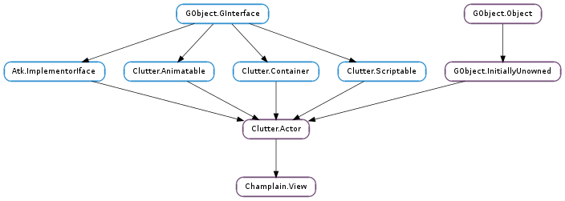

| Name | Type | Flags | Description |
|---|---|---|---|
| animate-zoom | bool | r/w | Animate zoom change when zooming in/out |
| background-pattern | Clutter.Actor | r/w | The tile’s background pattern |
| deceleration | float | r/w | Rate at which the view will decelerate in kinetic mode. |
| goto-animation-duration | int | r/w | The duration of an animation when going to a location |
| goto-animation-mode | Clutter.AnimationMode | r/w | The mode of animation when going to a location |
| keep-center-on-resize | bool | r/w | Keep the current centered position upon resizing |
| kinetic-mode | bool | r/w | Determines whether the view should use kinetic mode. |
| latitude | float | r/w | The latitude coordonate of the map |
| longitude | float | r/w | The longitude coordonate of the map |
| map-source | Champlain.MapSource | r/w | The map source being displayed |
| max-zoom-level | int | r/w | The highest allowed level of zoom |
| min-zoom-level | int | r/w | The lowest allowed level of zoom |
| zoom-level | int | r/w | The level of zoom of the map |
| zoom-on-double-click | bool | r/w | Zoom in and recenter on double click on the map |
| Name | Parameters | Return | Description |
|---|---|---|---|
| animation-completed | The Champlain.View ::animation-completed signal is emitted when any animation in the view ends. This is a detailed signal. For example, if you want to be signaled only for go-to animation, you should connect to “animation-completed::go-to”. | ||
| layer-relocated | Indicates that the layers have been “relocated”. In practice this means that every layer should connect to this signal and redraw itself when the signal is emitted. Layer relocation happens when zooming in/out and when panning for more than MAX_INT pixels. |
| Name | Type | Access |
|---|---|---|
| parent | Clutter.Actor | r |
Bases: Clutter.Actor, Clutter.Container
The Champlain.View structure contains only private data and should be accessed using the provided API
| Returns: | a new Champlain.View ready to be used as a Clutter.Actor. |
|---|---|
| Return type: | Clutter.Actor |
Creates an instance of Champlain.View.
| Parameters: | layer (Champlain.Layer) – a Champlain.Layer |
|---|
Adds a new layer to the view
| Parameters: |
|
|---|
Adds a new overlay map source to render tiles with the supplied opacity on top of the ordinary map source. Multiple overlay sources can be added.
| Parameters: |
|
|---|
This function inserts a custom actor to the undrelying Clutter.BinLayout manager. The inserted actors appear on top of the map. See Clutter.BinLayout.add () for reference.
| Parameters: |
|
|---|
Centers the map on these coordinates.
| Parameters: | animate (bool) – True to perform animation, False otherwise |
|---|
Changes the map’s zoom level and center to make sure that the bounding boxes of all inserted layers are visible.
| Parameters: |
|
|---|
Changes the map’s zoom level and center to make sure the given area is visible
| Returns: | True if the view animates zooms, False otherwise. |
|---|---|
| Return type: | bool |
Checks whether the view animates zoom level changes.
| Returns: | The texture. |
|---|---|
| Return type: | Clutter.Content |
Gets the current background texture displayed behind the map.
| Returns: | the bounding box |
|---|---|
| Return type: | Champlain.BoundingBox |
Gets the bounding box for view view at current zoom-level.
| Returns: | the latitude. |
|---|---|
| Return type: | float |
Gets the latitude of the view’s center.
| Returns: | the longitude. |
|---|---|
| Return type: | float |
Gets the longitude of the view’s center.
| Returns: | the view’s deceleration rate. |
|---|---|
| Return type: | float |
Gets the view’s deceleration rate.
| Returns: | True if the view keeps the center on resize, False otherwise. |
|---|---|
| Return type: | bool |
Checks whether to keep the center on resize
| Returns: | True for kinetic mode, False for push mode. |
|---|---|
| Return type: | bool |
Gets the view’s scroll mode behaviour.
| Returns: | the license actor |
|---|---|
| Return type: | Champlain.License |
Returns the Champlain.License actor which is inserted by default into the layout manager. It can be manipulated using standard Clutter.Actor methods (hidden and so on).
| Returns: | the view’s current map source. If you need to keep a reference to the map source then you have to call GObject.Object.ref (). |
|---|---|
| Return type: | Champlain.MapSource |
Gets the view’s current map source.
| Returns: | the view’s maximum allowed zoom level. |
|---|---|
| Return type: | int |
Gets the view’s maximum allowed zoom level.
| Returns: | the view’s minimal allowed zoom level. |
|---|---|
| Return type: | int |
Gets the view’s minimal allowed zoom level.
| Returns: | the list |
|---|---|
| Return type: | [Champlain.MapSource] |
Gets a list of overlay sources.
| Returns: | the state. |
|---|---|
| Return type: | Champlain.State |
Gets the view’s state.
| Return type: | x: int, y: int |
|---|
Gets the x and y coordinate of the viewport in respect to the layer origin.
| Returns: | the view’s current zoom level. |
|---|---|
| Return type: | int |
Gets the view’s current zoom level.
| Returns: | True if the view zooms on double click, False otherwise. |
|---|---|
| Return type: | bool |
Checks whether the view zooms on double click.
| Parameters: |
|
|---|
Move from the current position to these coordinates. All tiles in the intermediate view WILL be loaded!
| Parameters: | latitude (float) – the latitude |
|---|---|
| Returns: | the y coordinate |
| Return type: | float |
Converts the latitude to view’s y coordinate.
| Parameters: | longitude (float) – the longitude |
|---|---|
| Returns: | the x coordinate |
| Return type: | float |
Converts the longitude to view’s x coordinate.
Reloads all visible tiles.
| Parameters: | layer (Champlain.Layer) – a Champlain.Layer |
|---|
Removes the given layer from the view
| Parameters: | map_source (Champlain.MapSource) – |
|---|
Removes an overlay source from Champlain.View.
| Parameters: | value (bool) – a bool |
|---|
Should the view animate zoom level changes.
| Parameters: | background (Clutter.Content) – The background texture |
|---|
Sets the background texture displayed behind the map. Setting the background pattern affects performence slightly - use reasonably large patterns for better performance.
| Parameters: | rate (float) – a float between 1.001 and 2.0 |
|---|
The deceleration rate for the kinetic mode.
| Parameters: | value (bool) – a bool |
|---|
Keep the current centered position when resizing the view.
| Parameters: | kinetic (bool) – True for kinetic mode, False for push mode |
|---|
Determines the way the view reacts to scroll events.
| Parameters: | map_source (Champlain.MapSource) – a Champlain.MapSource |
|---|
Changes the currently used map source. GObject.Object.unref () will be called on the previous one.
As a side effect, changing the primary map source will also clear all secondary map sources.
| Parameters: | zoom_level (int) – the level of zoom |
|---|
Changes the highest allowed level of zoom
| Parameters: | zoom_level (int) – the level of zoom |
|---|
Changes the lowest allowed level of zoom
| Parameters: | zoom_level (int) – the level of zoom, a int between 1 and 20 |
|---|
Changes the current level of zoom
| Parameters: | value (bool) – a bool |
|---|
Should the view zoom in and recenter when the user double click on the map.
Stop the go to animation. The view will stay where it was when the animation was stopped.
| Parameters: | x (float) – x coordinate of the view |
|---|---|
| Returns: | the longitude |
| Return type: | float |
Converts the view’s x coordinate to longitude.
| Parameters: | y (float) – y coordinate of the view |
|---|---|
| Returns: | the latitude |
| Return type: | float |
Converts the view’s y coordinate to latitude.
Zoom in the map by one level.
Zoom out the map by one level.